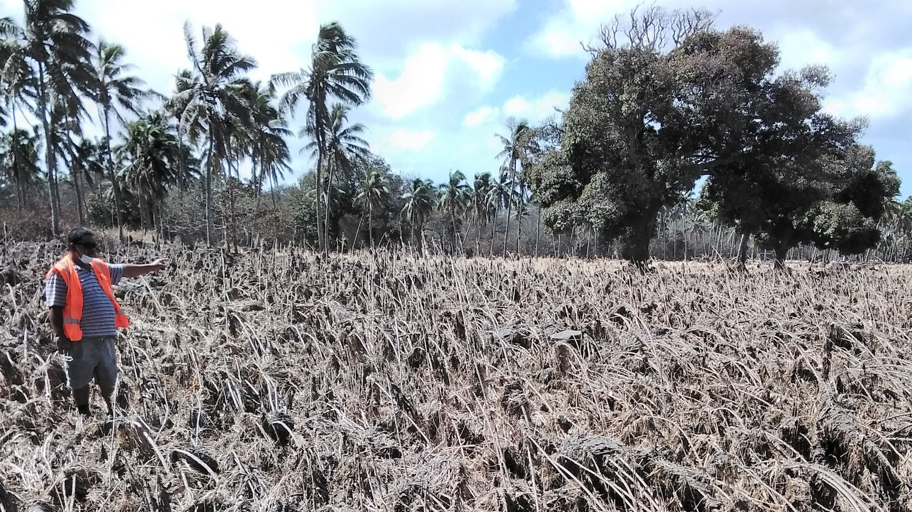
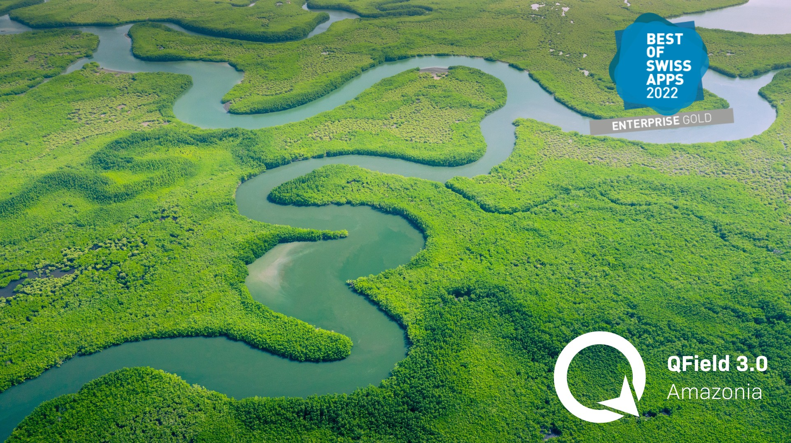
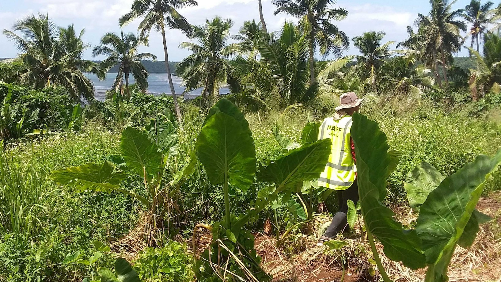

Tonga - 7 January 2022

Tonga - post eruption
Tonga - post eruption
Tonga Crop Survey - 2021
Tonga Crop Survey - 2021

3.0.6 Amazonia
950K Android, 80K iOS and xx Windows
4.8⭐ on 6K reviews
270K users monthly
60K users QFieldCloud
UN Opensource Geo-data collection tool

qfield.org
|
qfield.cloud
OPENGIS.ch
livelihoods-and-landscapes.com